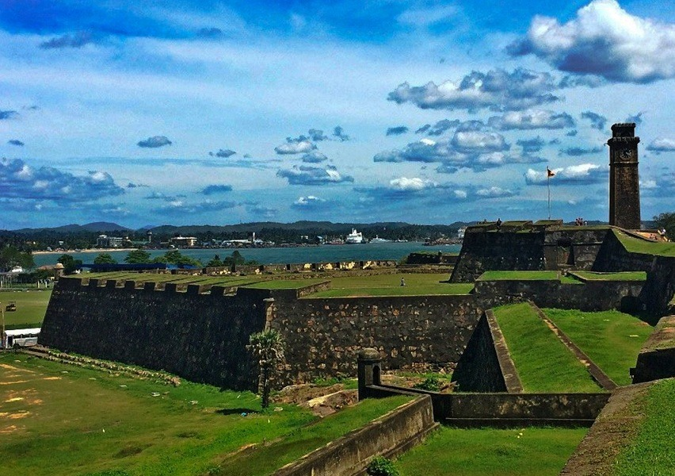

Active Outdoor
Stay dry,warm and comfortable
whenever the weather
With top tourist attractions in Sri Lanka to suit any traveller's needs.
 |
|
 |
 |
 |
|
| Hakgala Botanical Garden |
Galway's Land National park |
Lake Gregory |
Horton Plains National Park |
Pedro Tea Estate |
Bomburu Ella Waterfall |
| Hakgala Botanical Garden is situated on the
Nuwara Eliya.It is one of the five botanical gardens in Sri
Lanka.It is the second largest botanical garden in Sri Lanka |
A small patch of forest about 22 acres.Enjoyed the cold
climate and fresh air.A good place for bird watching.We saw some
giant squirrels and lizards also |
Lake Gregory sometimes also called Gregory lake
or Gregory Reservoir, is a reservoir in heart of the tea country
hill city, Nuwara Eliya, Sri Lanka |
It is rich in biodiversity and many species found
here are endemic to the region.It is also a popular tourist destination
and is situated 8 kilometres. |
The pedro tea estate is located in Central Sri Lanka at close
proximity to Nuwara Eliya and is located on a landscape with the blue sky as the
background with green pastures of tea and water falls cascading. |
It is located near the border of Nuwara Eliya and Badulla Districts.Bomburu Ella
is a water fall in sri lanka and consists of several small waterfalls grouped together.
The source of the falls is a lake located in the central highlands of sri lanka.
|
 |
 |
|
 |
|
|
| Sri Dalada Maligawa |
Royal Botanical Garden,Peradeniya |
Udawatta Kele Santury |
Kandy Lake |
Ceylon Tea Museum |
Ambuluwawa |
| The temple of the Sacred Tooth Relic, or Sri Dalada Maligawa, is a Buddhist temple
in Kandy, Sri Lanka. It is located in the royal palace complex of the former kingdom in Kandy, which
houses the relic of the Buddha. |
Royal Botanical Gardens, Peradeniya are about 5.5km to the west of the city of kandy
in the Central province of Sri Lanka.It is near the Mahaweli River.It is renowned for its collections of orchids. |
Udawatte kele Forest Reserve often spelled as Udawaththa Kele,is a historic
forest reserve on a hill-ridge in the city of Kandy.It is 104 hectares large. |
Kandy Lake, also known as Kiri Muhuda or the Sea of Milk, is an artificial lake in the heart of the
hill city of Kandy. Built in 1807 by King Sri Wicrama Rajasinghe next to the Temple Of the Tooth. |
The ceylon Tea museum is located in the former Hanthana Tea Factory,which was originally constructed in 1925.
Hanthana was one of the first successful areas to cultivate tea following the eailure of coffee production on the island. |
Ambuluwawa is a wonderful structure built in a summit of a mountain range. You can enjoy an
amazing 360 degree view of the magnificient central mount range of Sri Lanka. |
| |
|
|
|
|
 |
| Polhena Beach |
Dondra Head |
Matara Parawi Duwa |
Star Fort Matara |
Weherahena |
Hiriketiya Beach |
| The Polhena Beach in Matara is a peaceful beach that is perfect to just relax and bask in the unhindered
views of the Indian Ocean.It is one of the best beaches in the area with asmall sandy cove that is sheltered. |
Dondra is a settlement on the extreme southernmost tip of Sri Lanka, in the Indian Ocean near Matara.
The Dondra Head Lighthouse, ruins of several Hindu shrines of Tenavaram and a Vihara arae located in the vicinity. |
Parawi Duwa is a popular Buddhist temple as well as atourist attraction in Matara.
The temple is located in a beautiful island surrounded by the indian ocean. A steel bridge connects the island
to the land on the other wide and devotees as well as tourists can easily access the temple. |
The Star Fort is a Fort in Matara, located on the eastern bank of the Nilwala River,
approximately 350 metres from the gate to the matara Fort.It was constructed by the Dutch in 1975,
and was originally called Redoute Van Eck. |
Weherahena is a popular temple among the buddhist pilgrims. Although there is
nothing of historical significance the story of the temple is quite interesting. |
Hiriketiya beach is the hidden gem on the south coast of Sri Lanka.
Find out all the amazing things to see and do in hiriketiya and nearby Dikwella. |
|  |
 |
|
|
|
 |
| Galle Dutch Fort |
Lighthouse- Galle |
Unawatuna Beach |
Maritime Museum |
Koggala |
Sea Turtle Hatchery Centre, Mahamodara |
| Galle Fort in the bay of Galle on the southwest coast of Sri Lanka, was built first in
1588 by the Portuguese, then extensively fortified by the Dutch during the 17th
century from 1649 onwards. |
The Galle light house is an onshore lighthouse in Galle, Sri Lanka and is operated and
maintained by the Sri Lanka Poarts Authority. This is Sri Lanka's oldest light station. |
unawatuna is a coastal town in Galle district of Sri Lanka.Unawatuna is a major
tourist attraction in Sri Lanka and known for its beach and corals. Unawatuna Beach is ideal location people
who are looking for sun sand and sea. |
A maritime museum is a museum specializing in the display of objects relating to
ships and travel on large bodies of water. A subcategory of maritime museums are naval museums, which
focus on navies and the military use of the sea. |
Koggala is a small coastal town situated at the edge of a lagoon on the south coast of Sri Lanka,
located in galle district, southern province, sri Lanka. governed by an Urban Council. |
Sea turtle Hatchery located just a few kilometres from the Galle fort, the Mahamodara
Sea Turtle Hatchery is a conservation project that is aimed at preserving Sri Lanka's
rare and exotic species of turtles. |
 |
 |
 |
 |
 |
|
| Fort Jaffna |
Nallur Kandaswamy Temple |
Public Library Jaffna |
Nagadeepa Ancient Temple |
Elephant pass |
Neduntheevu |
| Jaffna fort is a fort built by the Portuguese at Jaffna, Sri Lanka,
1618 under Phillippe de Oliveira following the portuguese invasion of Jaffna. |
Nallur Kandaswamy Temple located in the ancient capital town of Nallur in Jaffna, it is
recorded that the center of the city was once a bustling maeket place,surrounded by a square fortification
that sheltered courly buildings for kings |
First built in 1933, theJaffna Library has long been a symbol of nothern heritage.
which it held nearly 100,000 books and manuscripts, making it one of the largest libries in Asia. |
Nagadeepa Purana Vihara is an ancient Buddhist temple situated in Jaffna, Sri Lanka.
It is belived that load Buddha has once stepped in this island and hence is one of the
most sacred places for Buddhists. |
Elephant pass Nothern province, Sri Lanka is located in the gateway of Jaffna
Peninsula. It lies about 340 km north from capital |
Neduntheevu is an island in the Palk Strait,Sri lanka.This island is named as Delft
in the Admiralty chart unlike the other islands, whose names are Tamil. |
 |
 |
 |
|
|
|
| Yala National Park |
Birds Park |
Ridiyagama Safari |
Bataatha Tourism Park |
Ginipetti Palama |
Kataragama |
| Yala National Park is a huge area of forest, grassland and lagoons bordering the indian Ocean.
It's home to wildlife such as leopards, elephants, and crocodiles, as well as hundreds of bird species. |
Bird Park is a home to endemic and exotic birds with over 180 varieties and around
3200 birds. The park which is located in the Southern part of the island expands. |
Ridiyagama Safari park is 500 acre safari park, zoo in Ridiyagama area of Hambantota District.
The Park was opened to the public on 28 may 2016 |
The Bataatha Agricultural Technology park was established in 2007 under the patronage of the ports.
The 50 acre Bataatha Agricultural Technology park is known as the second Agro Technology park in Sri Lanka besides the
Gannoruwa Agro Technology park. |
Muruthawela Ginipetti Palama is a great place to bathe and be happy in the South.
The canel that carries water from the Julampitiya Muruthawela |
Kataragama is a pilgrimage town sacred to Hindu, Buddhists and indigenous Vedda people of
Sri Lanka.People From South india also go there to worship.The town has the Kataragama temple, a shrine
dedicated to Skanda Kumara also Known as Kataragama deviyo. |